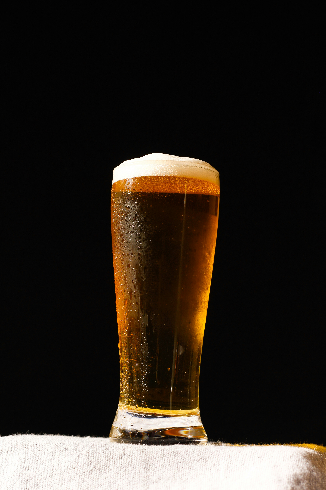
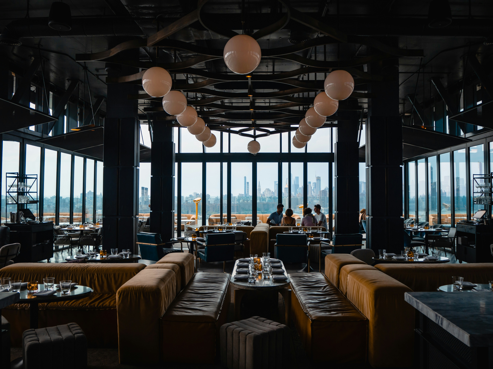

Za okupljanje
Vreme za porodicu, prijatelje i sve one koje dugo niste videli.
Dobri ukusi. Dobro društvo.
Mesto za domaće ukuse, omiljeno piće i trenutke koji se ne žure.
Ambijent: Laslovarga / CC BY-SA 4.0
Dobro došli za naš sto
Dobar obrok je više od hrane: to je razgovor koji potraje, sto oko kog se okupe dragi ljudi i atmosfera zbog koje se rado vraćamo.
Svratite na ručak, večeru ili predah uz omiljeno piće. U Pivskom Kaficu svaki susret ima mesta za još jednu priču.
Isplanirajte posetu



Vi birate povod
Porodični ručak, spontano viđanje ili veče s prijateljima: najlepši planovi često počinju okupljanjem. Izaberite svoje društvo, pronađite omiljeno mesto za stolom i prepustite se razgovoru.
Vreme za porodicu, prijatelje i sve one koje dugo niste videli.
Usporite uz omiljeno jelo, piće i prijatnu atmosferu.
Jer dobra druženja retko stanu u samo jedan kratak susret.
Vaše mesto za predah
Okupite svoje društvo, a za put do nas otvorite lokaciju na mapi.
Otvori mapu